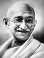

Küresel bir ikon olan Mohandas K. Gandhi (1869–1948) geleneksel Hindu inançlarını Hindistan’ın politik talepleri ile kaynaştırmıştır. Hindistan’ın yüzlerce yıllık İngiliz sömürgesinden kurtulmasında temel rol oynamıştır. Gandhi’nin açlık grevleri, barışçıl yürüyüşler ve boykotlar gibi şiddetten uzak yollara başvurması onu kahraman ve gelecek reformcular için ilham kaynağı haline getirmiştir. Ondan esinlenenlerin arasında Martin Luther King Jr. (1929–1968) da vardır.

Gandhi, Hindistan’ın batısında doğmuştu. On sekiz yaşında hukuk eğitimi almak için Londra’ya gitti. Mezun olur olmaz Güney Afrika’daki bir hukuk firmasında çalışmaya başladı. İngiliz toprağı olan bölgede geniş bir Hintli topluluk yaşıyordu. Durban şehrinde yaşarken Hintlilerin maruz kaldığı ayrımcılığa tanık oldu. Bu deneyim onun İngilizler’e bakış açısını değiştirecek ve politikaya girmesi için onu teşvik edecekti. Çok geçmeden Güney Afrika Hint topluluğunun lideri haline geldi. Hintliler’i oy kullanma gibi çeşitli haklardan mahrum bırakan tasarılara karşı mücadele etti.
1914 yılında Hindistan’a döndü ve ülkenin bağımsızlığını savunan Hindistan Ulusal Kongresi’ne katıldı. 1921 yılında Kongre’nin lideri oldu. Birkaç yıl içinde Hindistan bağımsızlık hareketinin en tanınan yüzü haline gelecekti.
Gandhi bir vejetaryendi. Alkol ya da kahve içmezdi. Otuz altı yaşından sonra seks yapmayı bırakmıştı. Mütevazi yaşam tarzı, halkın haklarını savunmak için kendini feda etmiş lider imajının oluşmasına katkıda bulunmuştu. En önemli sivil itaatsizlik eylemlerinden birini 1930 yılında gerçekleştirdi. Gandhi ve takipçileri İngiliz tuz vergilerini protesto etmek için 402 km yürüdüler. Tuz Yürüyüşü dünyanın dikkatini İngiliz yönetiminin beceriksizliklerine çekti.
İngiltere’nin Naziler’le savaşırken zayıf düştüğü II. Dünya Savaşı yıllarında Hindistan bağımsızlık yönündeki baskılarını arttırdı. “Hindistan’ı Terk Et” hareketinin başlaması ile birlikte pek çok aktivist tutuklandı.
1945 yılında İngilizler bağımsızlık yanlısı Clement Attlee’yi (1883–1967) başbakan seçtiler. İngiltere 1947’de ülkeden ayrılmadan önce Hindistan’ı ikiye ayırdı: Hinduların çoğunlukta olduğu Hindistan ve Müslümanların çoğunlukta olduğu Pakistan. İki komşu kısa süre içinde birbiriyle savaşmaya başladı.
Bağımsızlığın ilk yıllarında Gandhi, Pakistan’a karşı uysal bir duruş sergileyerek kimi Hindular’ı kızdırdı. 1948 yılında radikal bir Hindu tarafından öldürüldü.
Ek Bilgiler
1- Gandhi’ye büyük ruh anlamına gelen “Mahatma” unvanı verilmişti. Zaman zaman daha sevecen bir isim olan “Bapu” ismiyle de çağrılıyordu.
2- Güney Afrika’dayken bir dönem İngiliz ordusunda çalıştı. Hintlilerin de beyazların arasında çalışabileceğini göstermek istiyordu. 1906 yılında Zulular’la yapılan savaş sırasında bir sağlık birliğinde görev aldı.
3- Gandhi’nin, eşi Kasturba’dan (1869–1944) dört çocuğu vardı. Karısı ile on üç yaşında evlenmişti. Her ikisi de II. Dünya Savaşı yıllarında İngiltere tarafından tutuklandı. Kasturba 1944 yılında hapishanede öldü.